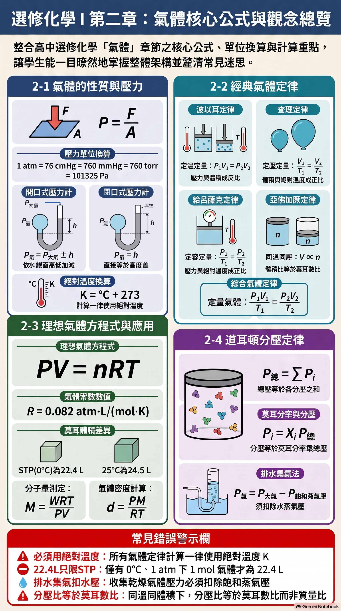

2-1
氣體的性質與壓力
- 1 atm = 76 cmHg = 760 mmHg = 760 torr = 101325 Pa ≈ 1013 hPa
- 開口式壓力計 P氣 = P大氣 ± h；閉口式 P氣 = h；計算一律用絕對溫度 T = t + 273
1NotebookLM 簡報
4資訊圖表
點一下放大全圖
2互動視覺化：壓力計實驗室
3隨堂評量
2-2
氣體定律
- 波以耳（定溫）P₁V₁ = P₂V₂；查理（定壓）V₁/T₁ = V₂/T₂；定容 P₁/T₁ = P₂/T₂
- 亞佛加厥：同溫同壓下 V ∝ n；綜合 P₁V₁/T₁ = P₂V₂/T₂
1NotebookLM 簡報
4資訊圖表
點一下放大全圖
2互動視覺化：活塞容器（1 mol 氣體）
粒子速率隨溫度變快；拖曳滑桿改變一個量，觀察另一個量怎麼變。按「設為起點」後可比較前後比值。
3隨堂評量
2-3
理想氣體方程式與氣體分子動力論
- PV = nRT，R = 0.082 atm·L/(mol·K)；STP 莫耳體積 22.4 L、25°C 約 24.5 L
- M = WRT/PV、d = PM/RT；同溫下平均動能相同，真實氣體在高溫低壓時最接近理想
1NotebookLM 簡報
4資訊圖表
點一下放大全圖
2互動視覺化：PV = nRT 計算機
要求的量：
氣體：
例子：
3隨堂評量
2-4
道耳頓分壓定律
- P總 = P₁ + P₂ + …；Pᵢ = Xᵢ × P總，同溫同體積下分壓比 = 莫耳數比
- 排水集氣法：P氣 = P大氣 − P水蒸氣（瓶內外水面等高時）
1NotebookLM 簡報
4資訊圖表
點一下放大全圖
2互動視覺化：混合氣體與排水集氣
3隨堂評量
🧠
本章心智圖
- NotebookLM 產生的概念架構（中文版）：點小標題可展開或收合
- 上課可先全部收合，請學生猜每個分支下面有什麼，再逐一打開
🃏
學習卡
- 點卡片（或按空白鍵）翻面看答案；← → 切換上一張、下一張
- 標記「我會了／再複習」，可以只練還不熟的卡片；標記只存在這台電腦的瀏覽器
★
總複習
- 本章重點總整理、形成性評量 10 題（附答案）、完整資訊圖表與教學影片
1NotebookLM 簡報：總整理與形成性評量
▶NotebookLM 教學影片
4完整資訊圖表

點一下放大